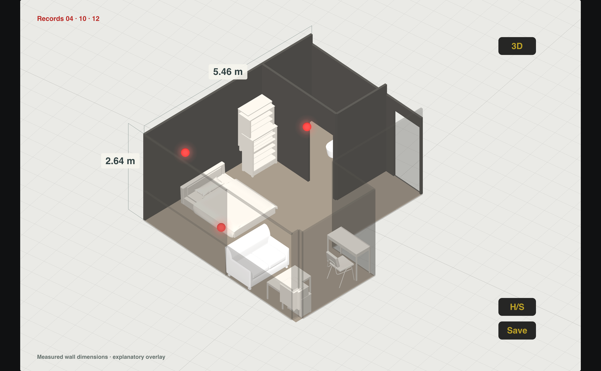
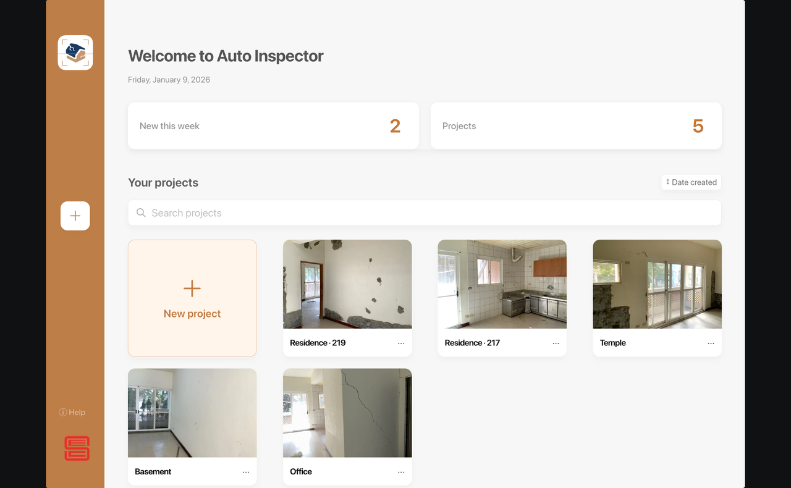
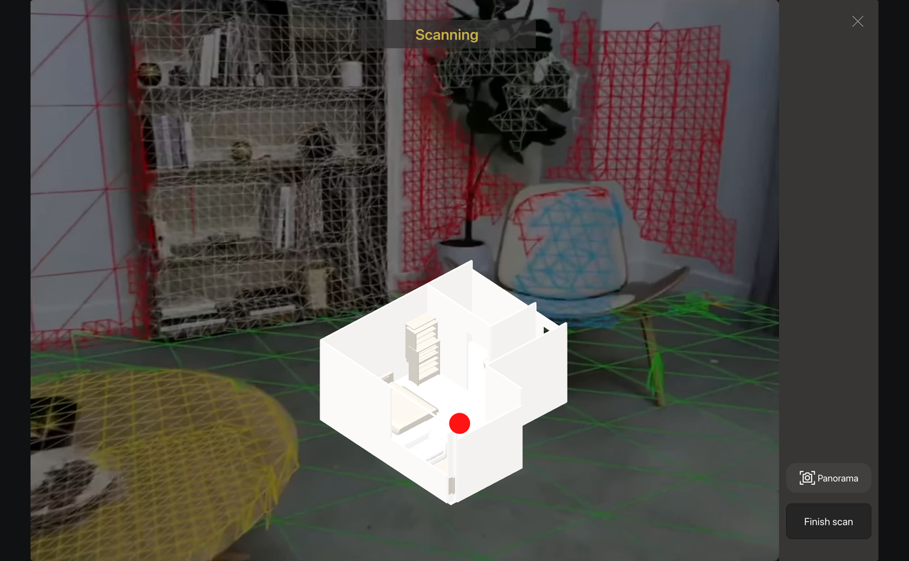
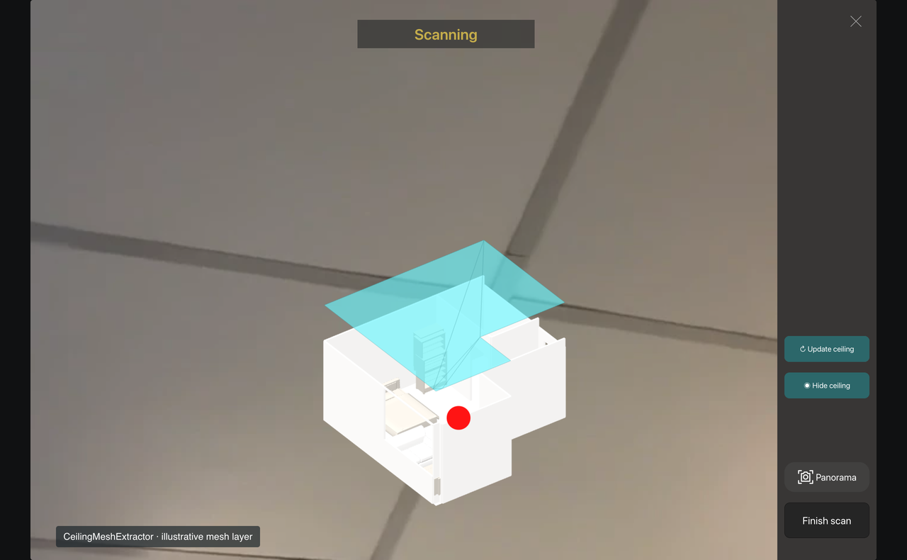
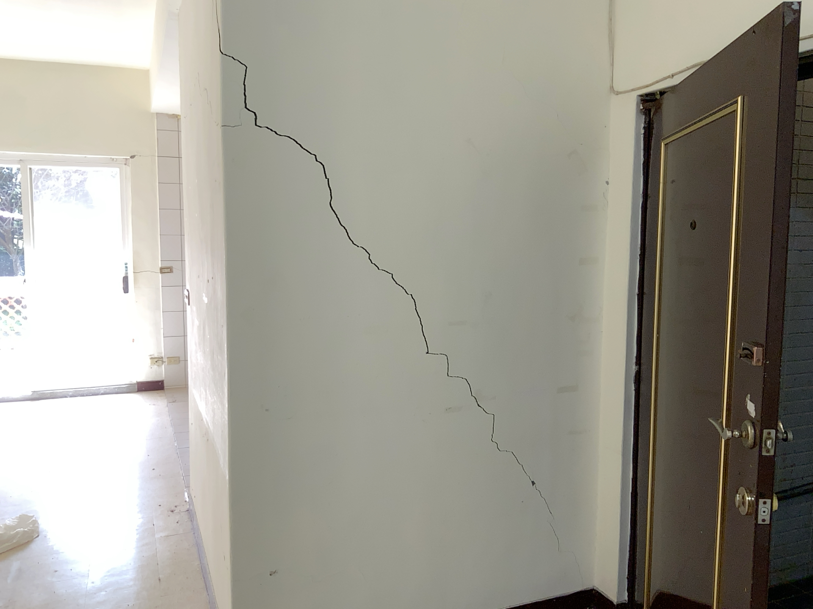
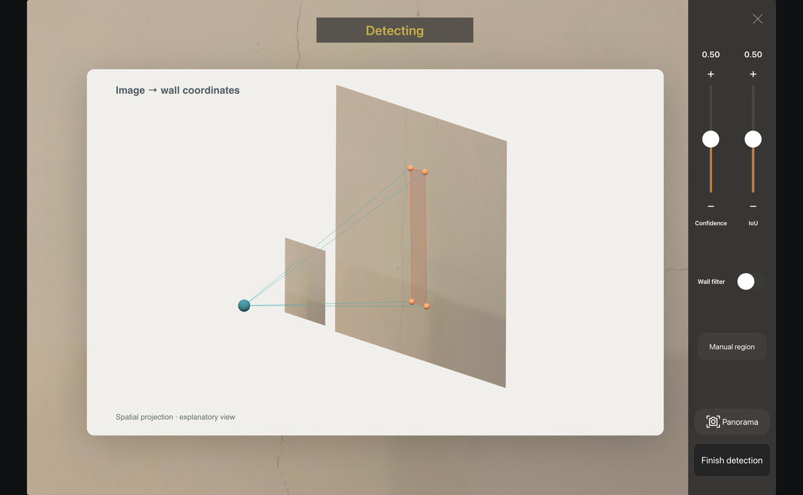
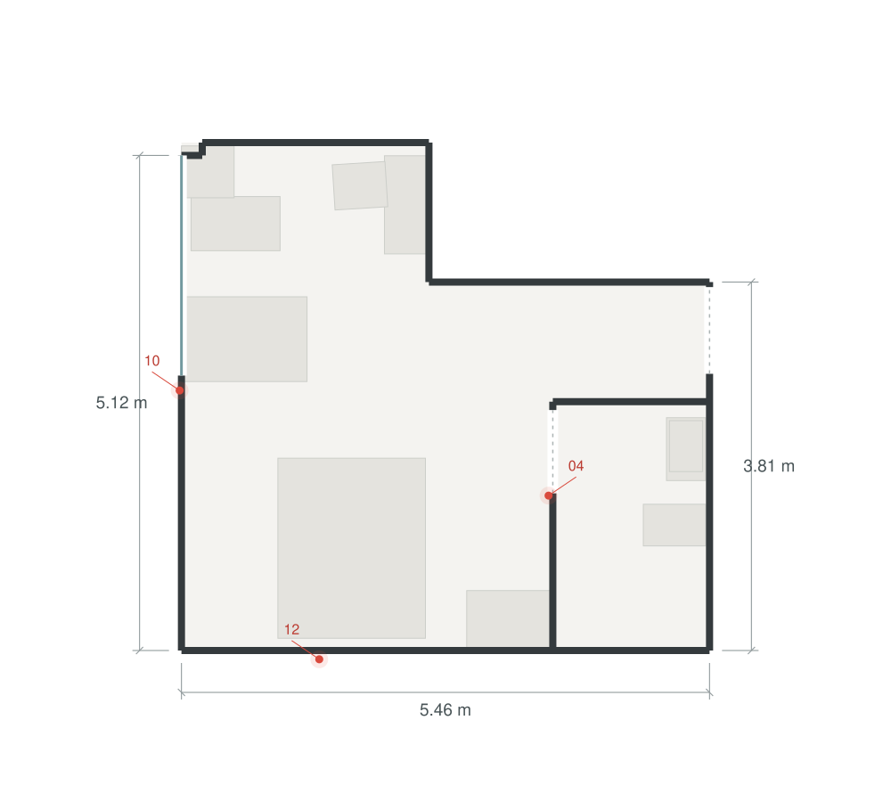
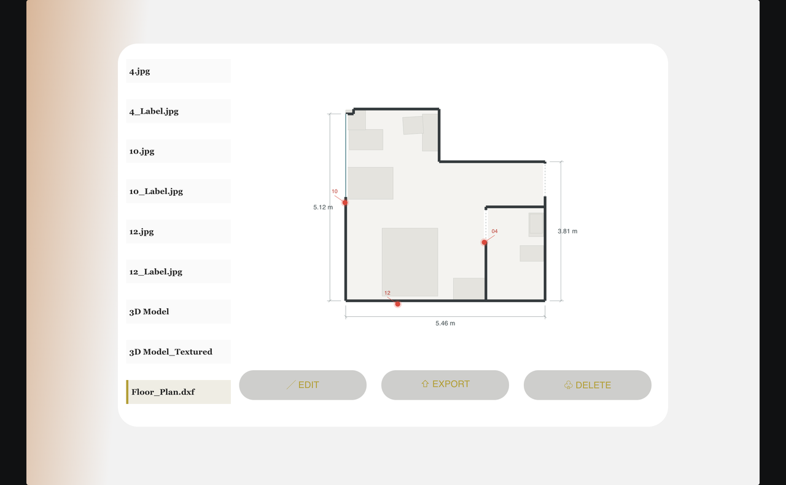

Field inspection · Spatial computing · iOS
Auto Inspector
From an image of a defect
to a record of where it belongs.
An iPad-based inspection system connecting room reconstruction, on-device detection and coordinate-aware records. One workflow from site capture to reviewable 3D models and floor plans.

01 · Why a spatial workflow
A photograph is not
a location.
Conventional inspection leaves the engineer to reconcile photographs, measurements and sketches. A detected region can identify deterioration in an image, but it does not by itself say which building surface contains it.
I developed the iPad application and its end-to-end data workflow: spatial reconstruction, custom mesh processing, on-device detection, AR localization, interactive review and export.
- CaptureLiDAR · RGB · IMU
RoomPlan and ARKit establish room geometry and a shared coordinate frame.
- LocateDetect · select · raycast
An image-space candidate becomes a user-selected surface record.
- DeliverModel · plan · evidence
Geometry, images and coordinates stay associated beyond the site visit.


02 · Beyond the standard room model
Recover the surfaces
above the walls.
RoomPlan provides structured room elements. Inspection also needs the geometry overhead. CeilingMeshExtractor processes ARKit mesh data to extend the reconstruction to ceilings, beams and other upper-level geometry.
The extractor selects faces classified as ceilings, transforms their vertices from each anchor's local frame into world coordinates, and assembles the triangles into a translucent SceneKit layer.
The capture interface exposes ceiling update and visibility controls, allowing the additional surface layer to be reviewed alongside the room model.

03 · Image coordinates → surface coordinates
Keep the observation
attached to the building.
Core ML detection produces candidate regions in the camera image. Tapping a candidate triggers AR raycasts at its center and four corners. The application checks the surface hits before creating the record; the saved corners and camera pose support spatial review.
This is a user-selected inspection record—not an automatic structural diagnosis. The marked region locates the observation; it is not a claim of crack-width measurement accuracy.

Field-recorded image evidence
Photo → camera pose → wall region.
Each selected observation is stored with an image, camera pose and surface coordinates. This crack example comes from the multi-room residential field test.
The projection illustration and model/plan examples below use a separate studio dataset. Four stored corner coordinates define the illustrated patch; its center is derived from those corners.

What the capture controls do
- Confidence / IoU
- Adjust detection confidence and overlap filtering.
- Wall filter
- Constrain the relevant detection workflow to wall surfaces.
- Manual region
- Let the inspector select a region when a manual record is needed.
- Panorama
- Capture wider visual context for the inspection.
The red dot in RoomPreview denotes the user's position. A selected defect appears as a spatial overlay; red spheres in the final model mark saved defect locations.
04 · Reviewable deliverables
The same inspection.
More than one view.
ModelViewer presents the reconstructed room with defect markers. RecordViewer brings together photographs, labeled images, 3D outputs and the dimensioned floor plan.
The model and plan below share the studio's recorded geometry. Selected records 04, 10 and 12 retain their identity across the visualization; shown dimensions come from the recorded room data.


- 3D model
- USDZ geometry for spatial review.
- Floor plan
- DXF output for a dimensioned drawing workflow.
- Inspection records
- CSV data associating the observations with spatial coordinates.
- Image evidence
- Original and labeled images for visual checking.
05 · Field validation
Validated across
multiple site types.
The workflow was validated through repeated field trials in studio apartments, multi-room residences, special-use buildings and construction sites. Across these tests, we demonstrated room reconstruction, defect detection and spatial recording under real site conditions. The recordings below document selected trials.
Reported project evaluation results for the tested workflow and geometry. These are not universal performance guarantees or a measure of defect-localization or crack-width accuracy.